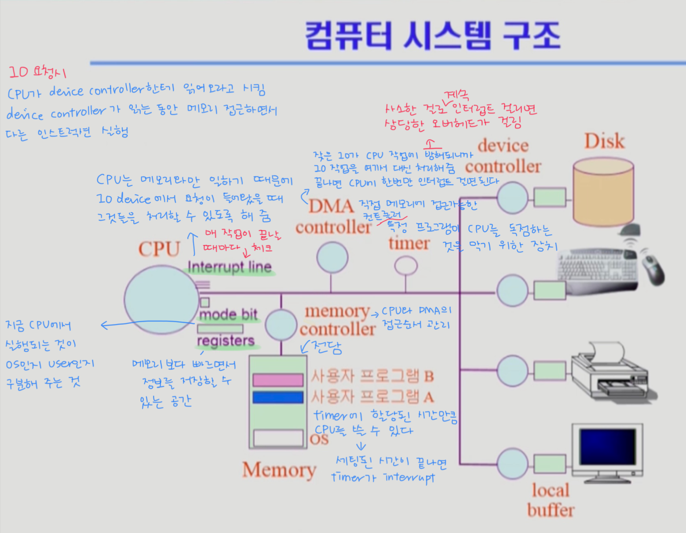
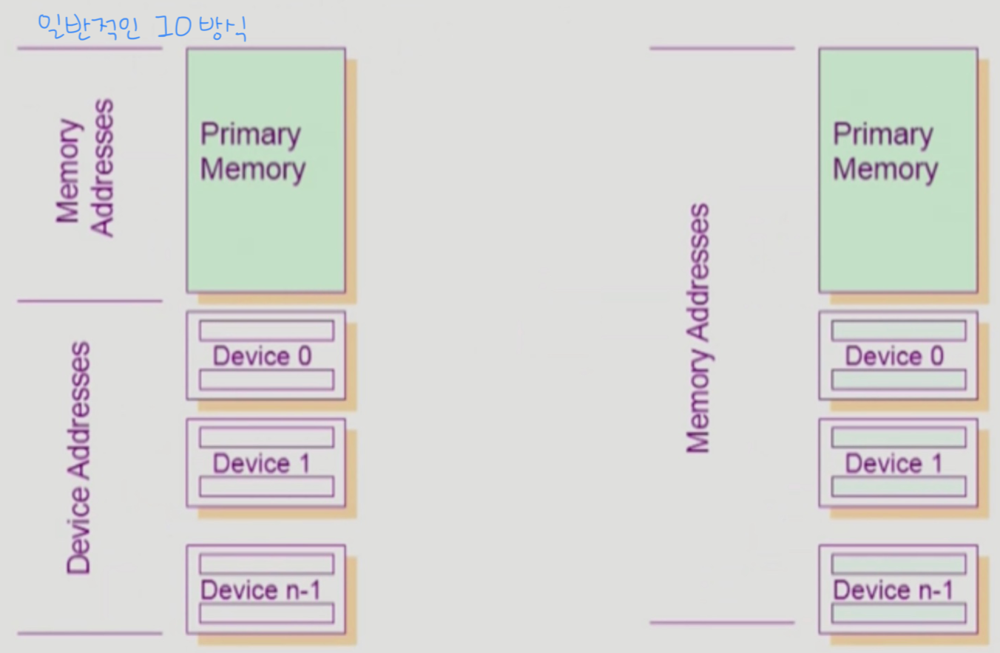
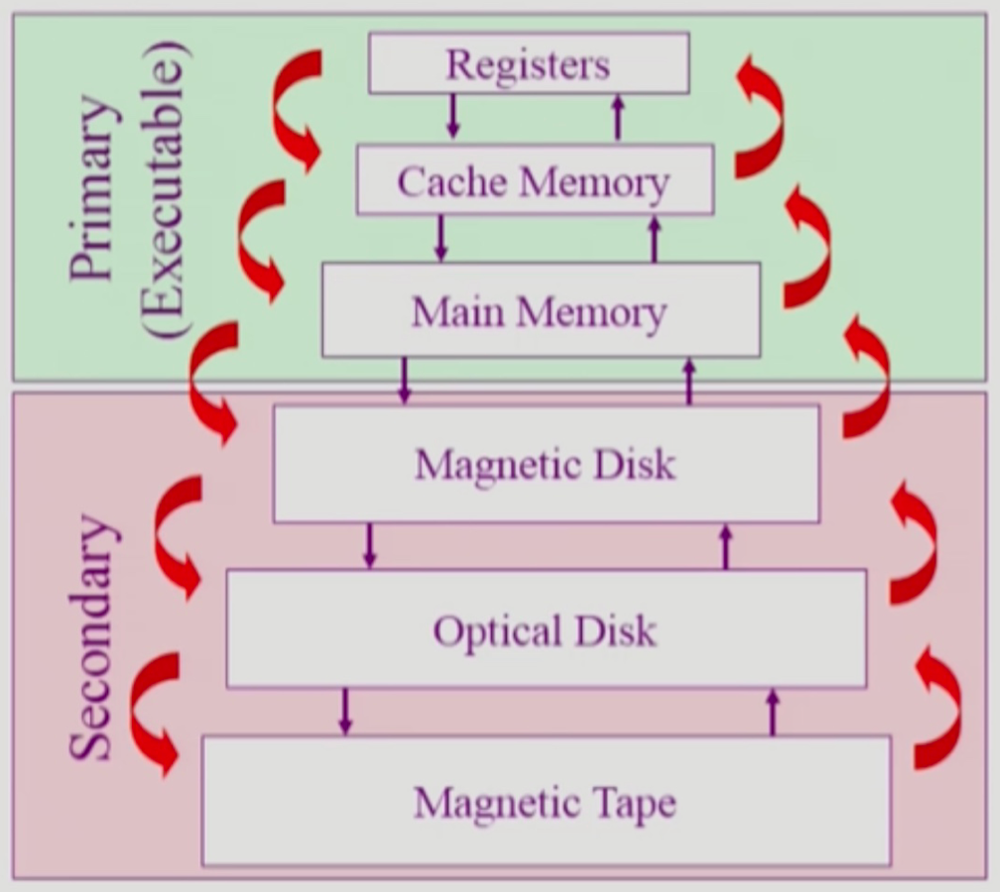
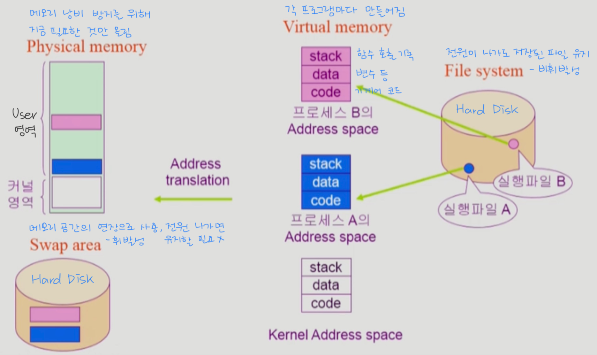
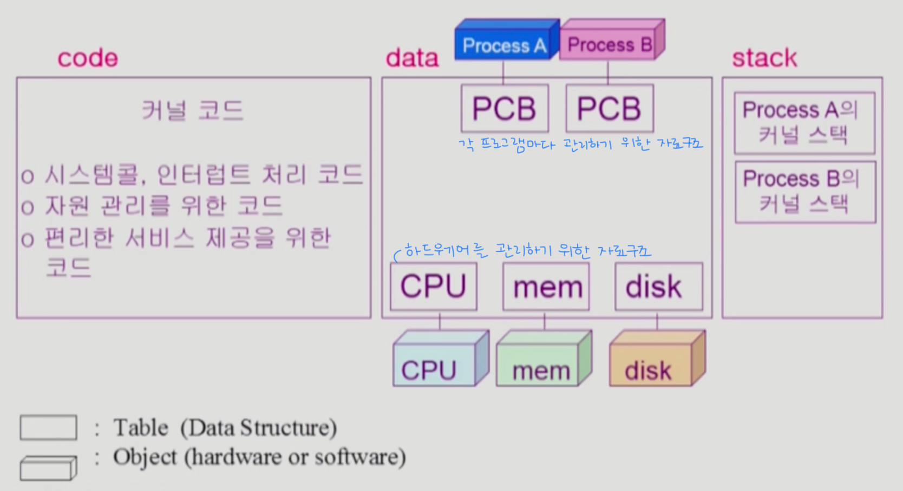

시스템 구조와 프로그램 실행
👀 컴퓨터 시스템 구조

CPU는 매 시간마다Memory에서 기계어Instruction을 읽어서 실행하게 된다.- 따라서
Memory는CPU의 작업공간이라 할 수 있다. -
Disk가I/O장치인 이유는 데이터를Memory에서 읽어들이기도 하고 처리된 데이터를 가져와서 저장하기도 하기 때문이다. device controller는 각I/O device를 전담하는 작은CPU역할을 한다.I/O device가CPU에 비해 많이 느려서CPU가I/O작업 처리가 끝나는 것을 마냥 기다릴 수는 없기 때문에 중간에controller를 둬서I/O작업이 끝나면CPU에게 알려준다.local buffer는 각I/O device controller의 작업공간이다.- 입력받은 내용이나 출력할 내용을 여기에 저장해뒀다가
device controller가 사용자 프로그램으로 전달하거나 화면에 출력하는 등의 작업을 한다.
Mode bit
- 사용자 프로그램의 잘못된 수행으로 다른 프로그램 및 운영체제에 피해가 가지 않도록 하기 위한 보호 장치가 필요해서 사용한다.
- 현재 수행중인
Instruction이 운영체제인지 사용자 프로그램인지 구분하기 위한 것 0과1이라는 두 가지operation을 사용해모니터 모드와사용자 모드를 구분한다.1사용자 모드 : 사용자 프로그램 수행0모니터 모드(= 커널 모드, 시스템 모드) :OS코드 수행
- 보안을 해칠 수 있는 중요한 명령어는 모니터 모드에서만 수행 가능한
특권명령으로 규정한다. Interrupt나Exception발생시하드웨어가mode bit을 0으로 바꾼다.- 사용자 프로그램에게
CPU를 넘기기 전에mode bit을 1로 세팅
Timer
CPU를 특정 프로그램이 독점하는 것으로부터 보호하기 위해서 사용한다.- 정해진 시간이 흐른 뒤 운영체제에게 제어권이 넘어가도록
Interrupt를 발생시킨다. Timer는 매 클럭 틱 때마다 1씩 감소한다.Timer값이 0이 되면Timer Interrupt발생
- 정해진 시간이 흐른 뒤 운영체제에게 제어권이 넘어가도록
time sharing을 구현하기 위해 널리 이용된다.- 현재 시간을 계산하기 위해서도 사용된다.
Device Controller
- 해당
I/O장치유형을 관리하는 일종의 작은CPU - 제어 정보를 위해
control register,status register를 가진다.CPU는device controller를 통해 일을 시키는데 이 때control register와status register를 사용한다.
-
local buffer를 가진다.(일종의data register) I/O는 실제device와local buffer사이에서 일어난다.device controller는I/O가 끝났을 경우Interrupt로CPU에 그 사실을 알린다.
☑️ device driver(장치구동기)
OS코드 중 각 장치별 처리루틴 ➡️software- ex) 새 프린터를 사면 설치하는 프린터용 드라이버
☑️ device controller(장치제어기)
- 각 장치를 통제하는 일종의 작은
CPU➡️hardware
입출력(I/O)의 수행
- 모든 입출력 명령은
특권명령이다.
☑️ 사용자 프로그램의 I/O 방법
- 시스템콜(
system call)- 사용자 프로그램은 운영체제에게
I/O요청
- 사용자 프로그램은 운영체제에게
trap을 사용하여 인터럽트 벡터의 특정 위치로 이동- 제어권이 인터럽트 벡터가 가리키는 인터럽트 서비스 루틴으로 이동
- 올바른
I/O요청인지 확인 후I/O수행 I/O완료 시 제어권을system call다음 명령으로 옮김
인터럽트(Interrupt)
- 인터럽트 당한 시점의 레지스터와
program counter를 저장한 후CPU의 제어를 인터럽트 처리 루틴에 넘긴다.
☑️ 넓은 의미의 인터럽트
Interrupt(하드웨어 인터럽트) : 하드웨어가 발생시킨 인터럽트로 일반적인 의미의 인터럽트Trap(소프트웨어 인터럽트)Exception: 프로그램이 오류를 범한 경우(프로그램 강제종료 등으로 대응)System call: 프로그램이 커널 함수를 호출하는 경우
- 일반적으로 인터럽트 하면 하드웨어적인 인터럽트를 의미하고 소프트웨어적인 인터럽트는
Trap이라고 따로 지칭한다.
☑️ 인터럽트 관련 용어
- 인터럽트 벡터
- 해당 인터럽트의 처리 루틴 주소(처리 위치)를 가지고 있다.
- 인터럽트 처리 루틴(=
Interrupt Service Routine, 인터럽트 핸들러)- 해당 인터럽트를 처리하는 커널 함수
🔸 현대의 운영체제는 인터럽트에 의해 구동된다.
- 만약 인터럽트가 없으면
CPU는 항상 사용자 프로그램이 쓰고 있게 될 것이다.
시스템콜(System Call)
- 사용자 프로그램이 운영체제의 서비스를 받기 위해
커널 함수를 호출하는 것 - 사용자 프로그램이
I/O등의 작업을 수행해야 할 때시스템콜을 통해 운영체제에게CPU를 넘겨줌으로서 필요한 서비스를 받을 수 있게 된다.
동기식 입출력과 비동기식 입출력
☑️ 동기식 입출력 (Synchronous I/O)
-
I/O요청 후 입출력 작업이 완료된 후에야 제어가 사용자 프로그램에게 넘어간다. - 구현 방법 1 (잘 안 씀)
- 하나의
I/O가 끝날 때까지 그거 하나만 한다. I/O가 끝날 때까지CPU를 낭비시킴- 매시점 하나의
I/O만 일어날 수 있음
- 하나의
- 구현 방법 2 (보통 이렇게 구현함)
I/O가 완료될 때까지 해당 프로그램에게서CPU를 빼앗음I/O처리를 기다리는 줄에 그 프로그램을 줄 세움- 다른 프로그램에게
CPU를 줌 - 이 프로그램의
I/O작업이 끝나면 다시CPU를 준다.
☑️ 비동기식 입출력 (Asynchronous I/O)
I/O가 시작된 후 입출력 작업이 끝나기를 기다리지 않고 제어가 사용자 프로그램에게 즉시 넘어간다.
🔸 두 경우 모두 I/O의 완료는 인터럽트로 알려준다.
DMA(Direct Memory Access)
- 입출력 장치를 메모리에 가까운 속도로 처리하기 위해 사용한다.
CPU의 중재 없이device controller가device의buffer storage의 내용을 메모리에block단위로 직접 전송byte단위가 아니라block단위로 인터럽트를 발생시킴
서로 다른 입출력 명령어

- 일반적인
I/O방식은 메모리를 관리하는 주소와 디바이스를 관리하는 주소를 따로 관리한다. Memory Mapped방식은 디바이스를 관리하는 주소도 메모리 영역에서 함께 관리한다.
저장장치 계층 구조

- 위로 갈수록
Speed⬆️Cost⬆️(단위공간당 용량이 적어진다)Volatility⭕️ (휘발성- 전원을 끄면 데이터가 사라진다)CPU에서 직접 접근 가능(byte단위 접근 가능)
- 아래로 갈수록
Speed⬇️Cost⬇️(단위공간당 용량이 커진다)Volatility❌ (비휘발성- 전원을 꺼도 데이터가 사라지지 않는다)CPU직접 접근 불가(byte단위 접근이 불가능하며섹터단위 접근 가능)
☑️ Caching
- 메인 메모리에 있는 내용 중 당장 필요한 것만 캐시 메모리에 올려 쓰는 것으로 재사용을 빠르게 하기 위한 목적
프로그램의 실행(메모리 load)

커널 주소 공간의 내용

사용자 프로그램이 사용하는 함수
-
모든 프로그램은 함수 구조로 짜여 있다. (기계어 레벨에서도 함수의 시작과 끝이 표시됨)
- 사용자 정의 함수
- 자신의 프로그램에서 정의한 함수
- 자신의 프로그램에서 정의한 함수
- 라이브러리 함수
- 자신의 프로그램에서 정의하지 않고 만들어져 있는 것을 가져다 쓴 함수
- 자신의 프로그램의 실행 파일에 포함되어 있다.
☑️ 이 두 가지는 자신의 프로그램의 코드 영역에 포함되어 있어서 가상 메모리 안에서 자유롭게 점프가 가능하다.
- 커널 함수
- 운영체제 프로그램의 함수
- 커널 함수의 호출 = 시스템 콜
☑️ 커널 함수는 커널의 코드 영역에 포함되어 있기 때문에 사용자 프로그램에서 자유로운 점프를 할 수 없다. ➡️ System call을 통해 운영체제에게 CPU 제어권을 넘기게 된다.
프로그램의 실행